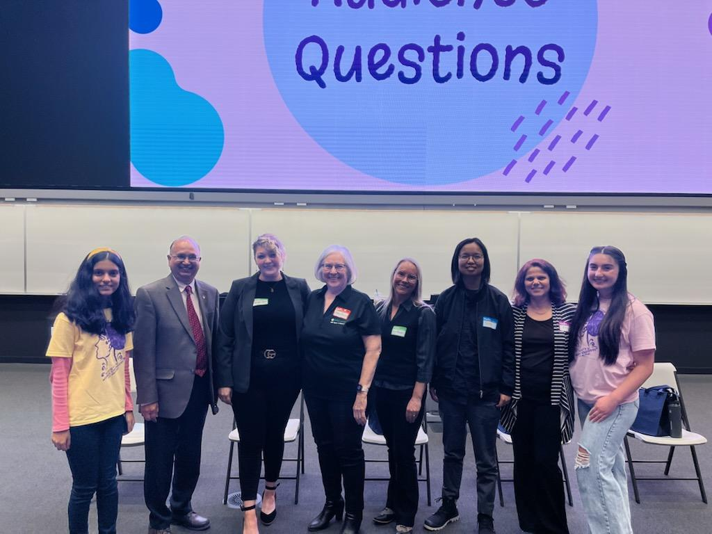

FLY CITRIS Takes Flight at UC Merced's
Expanding Your Horizons Conference
March 22, 2024
By: Eleanor King, UC Merced

FLY CITRIS, an innovative drone education program run by CITRIS, was showcased during a workshop at the 10th annual Expanding Your Horizons (EYH) Conference organized by the Society of Women Engineers on Saturday, March 18, 2024. The conference, hosted in person at the UC Merced campus, aims to inspire middle and high school girls to explore opportunities in science, technology, engineering, and mathematics (STEM). Participants immersed themselves in hands-on activities, through manual flying and an engaging drone obstacle course. These activities foster teamwork, spatial thinking, and mission planning skills, while promoting opportunities in STEM.
During the conference, attendees had the opportunity to experience FLY CITRIS firsthand, along with other engaging workshops and talks hosted by various organizations across the UC Merced campus. This included a panel talk focusing on “Women in STEM,” featuring CITRIS Director Dr. Erin Hestir.
"CITRIS is proud to once again support SWE in their important efforts to nurture girls' interests in math and science and careers in science, technology, engineering and math,” said Dr. Hestir. “We look forward to a future where our tech workforce is more diverse, more inclusive, and filled with brilliant young minds like those we saw today."
The conference aims to provide young girls with exposure to STEM fields and inspire them to pursue careers in these areas. Eleanor King, CITRIS Outreach and Education Coordinator, said about the workshop, “It’s exciting to engage with future scientists, engineers, and drone pilots as they get to fly for the first time. We hope to continue running workshops like FLY that provide even more students with the opportunity to explore new STEM pathways.”